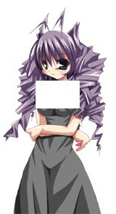

アニメーション・着せ替え（SERIKO / MAYUNA）
ゴーストではアニメーション仕様をSERIKO、着せ替え仕様をMAYUNAと呼称する。
アニメーション(SERIKO)
アニメーションは全てサーフィスの組み合わせで行われる。
アニメーションパターンはsurfaces.txtで定義する。
SERIKOには1.x系の定義（旧定義）と、2.0の定義があり、2.0の定義で記述する場合、surfaces.txt内にdescriptブレスを設け、以下の記述が必要になる。
descript
{
version,1
}
surface0
{
animation0.interval,sometimes
animation0.pattern0,overlay,100,5,0,0
animation0.pattern1,overlay,101,5,0,0
animation0.pattern2,overlay,100,5,0,0
animation0.pattern3,overlay,-1,5,0,0
animation1.interval,always
animation1.pattern0,overlay,50,20,10,0
animation1.pattern1,overlay,51,20,10,0
animation1.pattern2,overlay,52,20,10,0
animation1.pattern3,overlay,53,20,10,0
animation1.pattern4,overlay,54,20,10,0
animation1.pattern5,overlay,53,20,10,0
animation1.pattern6,overlay,52,20,10,0
animation1.pattern7,overlay,51,20,10,0
animation2.interval,runonce
animation2.pattern0,overlay,60,20
animation2.pattern1,overlay,61,20
animation2.pattern2,overlay,62,20
animation2.pattern3,overlay,63,20
animation2.pattern4,overlay,64,20
animation2.pattern5,overlay,-1,20
animation3.interval,always
animation3.pattern0,move,0,15,0,-1
animation3.pattern1,move,0,15,0,-2
animation3.pattern2,move,0,15,0,-3
animation3.pattern3,move,0,15,0,-3
animation3.pattern4,move,0,15,0,-2
animation3.pattern5,move,0,15,0,-1
animation3.pattern6,move,0,15,0,0
animation3.pattern7,move,0,15,0,1
animation3.pattern8,move,0,15,0,2
animation3.pattern9,move,0,15,0,3
animation3.pattern10,move,0,15,0,3
animation3.pattern11,move,0,15,0,2
animation3.pattern12,move,0,15,0,1
animation3.pattern13,move,0,15,0,0
}
MATERIAでは1つのベースサーフィスが持てるアニメーションパターンは最大で128（animation0～animation127）まで。
着せ替え(MAYUNA)
MATERIA、SSPのみ可能。
CROWでは着せ替え初期配置のみで表示される。
ただし、MATERIAはバグにより\0側しか着せ替えメニューが表示されない。
surface0
{
animation0.interval,bind
animation0.pattern0,bind,200,2,0,0
animation1.interval,bind
animation1.pattern0,bind,150,2,0,0
}
bindで指定されたサーフィスはベースにレイヤー加算され「服」のサーフィスとなる。
bindはアニメーションパターンを無視する。
複数重ねることにより各部パーツを再現することも可能。
それらは番号の順に重ねられていく。
surface0
{
animation0.interval,bind
animation0.pattern0,add,100,2,0,0
animation0.pattern1,add,101,20,0
animation0.pattern2,reduce,102,2,0,0
animation0.pattern3,add,103,2,0,0
}
reduceを使用した場合下記のような減算のされ方をする。
reduceより下にあるレイヤー及びベースサーフィスに適用される。
 |
→ |  | → | |
| surface0.png | surface102.pna | デスクトップの表示 |
bindアニメーショングループはユーザーがメニューから自由にON/OFF可能になる。
つまり服を着せたり脱がせたりすることができるが、そのためにはdescript.txtを適切に編集する必要がある。
sakura.bindgroup0.name,服,エプロンドレス,apron sakura.bindgroup1.name,リボン,白リボン,ribbonwhite sakura.bindgroup2.name,服,黒服,black sakura.bindgroup3.name,リボン,黒リボン,ribbonblack sakura.bindgroup0.default,1 sakura.bindgroup1.default,1 kero.bindgroup0.name,ネクタイ,ネクタイ kero.bindgroup1.name,腕章,黒腕章 kero.bindgroup2.name,腕,ドリル kero.bindgroup0.default,1 kero.bindgroup1.default,1 sakura.menuitem0,2 sakura.menuitem1,3 sakura.menuitem2,- sakura.menuitem3,0 sakura.menuitem4,1 kero.menuitem0,0 kero.menuitem1,1 kero.menuitem2,- kero.menuitem3,2
上記のように記述することで本体側の「着せ替え」メニューに「エプロンドレス」「黒服」「白リボン」「黒リボン」
相方側のメニューに「ネクタイ」「腕章」「腕」が出現し、それらを自由に着脱することができるようになる。
左から順に、カテゴリ名、パーツ名、サムネイルファイル名をカンマで区切って記述する。
同じ種類のグループには常に同じIDを振る必要があることに注意。
*.bindgroup*.defaultはそのシェルの初期値の着せ替えを設定する。
この設定ではデフォルトでエプロンドレス＆白リボン、ネクタイ＆黒腕章になる。
0を指定もしくは省略すると着せ替えOFF状態となる。
*.menuitem*,* はメニュー項目の構造を表している。
メニューツリー表示順に番号を割り振り、カンマで区切りbindgroup*のIDを指定する。
セパレータを挟む場合はIDに-と記述する。
この例だと着せ替えアイテムは上から順に黒服、黒リボン、セパレータ、エプロンドレス、白リボンとなる。
サムネイルはメニュー選択時のガイドとして表示される。
不要な場合無指定でも構わない。